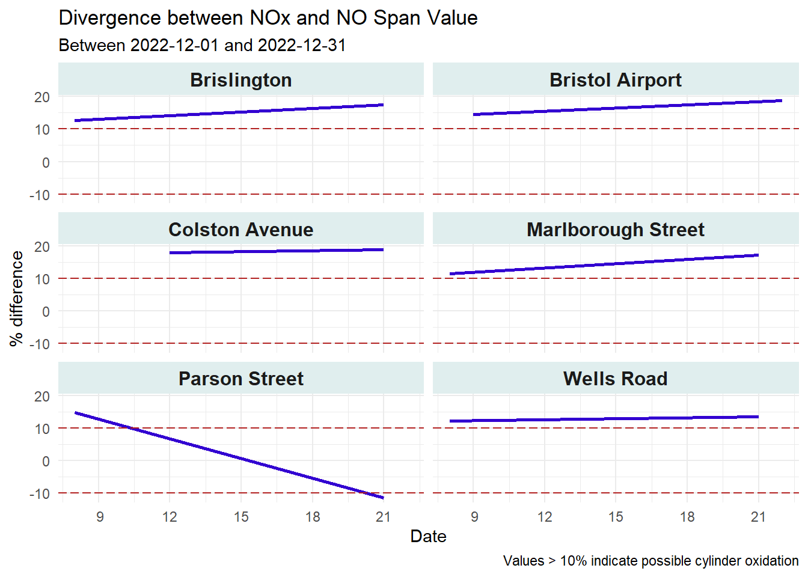
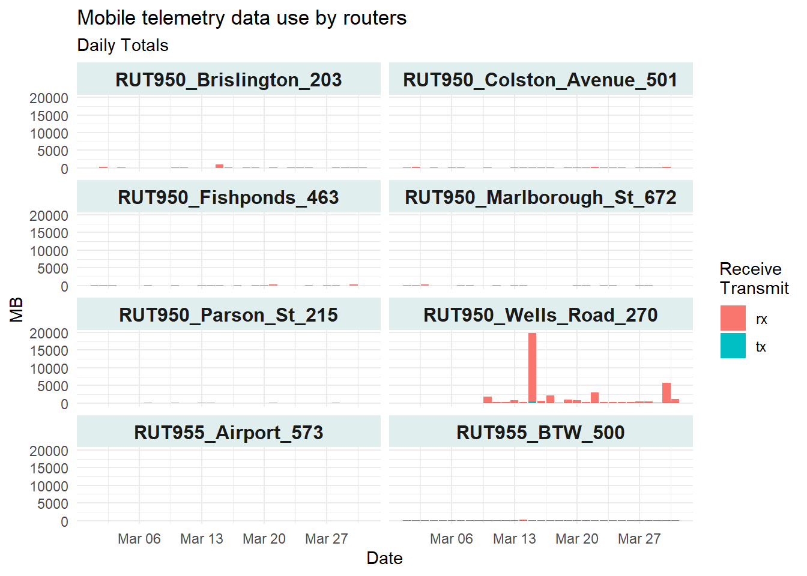
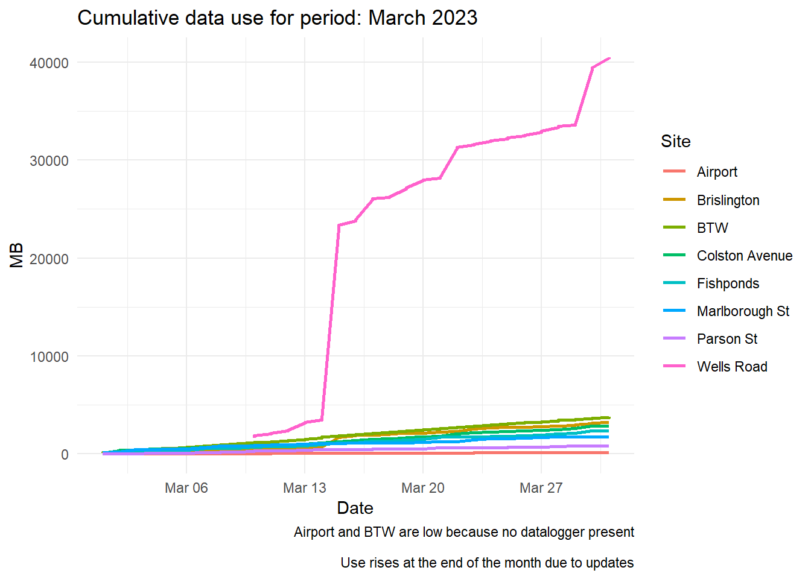
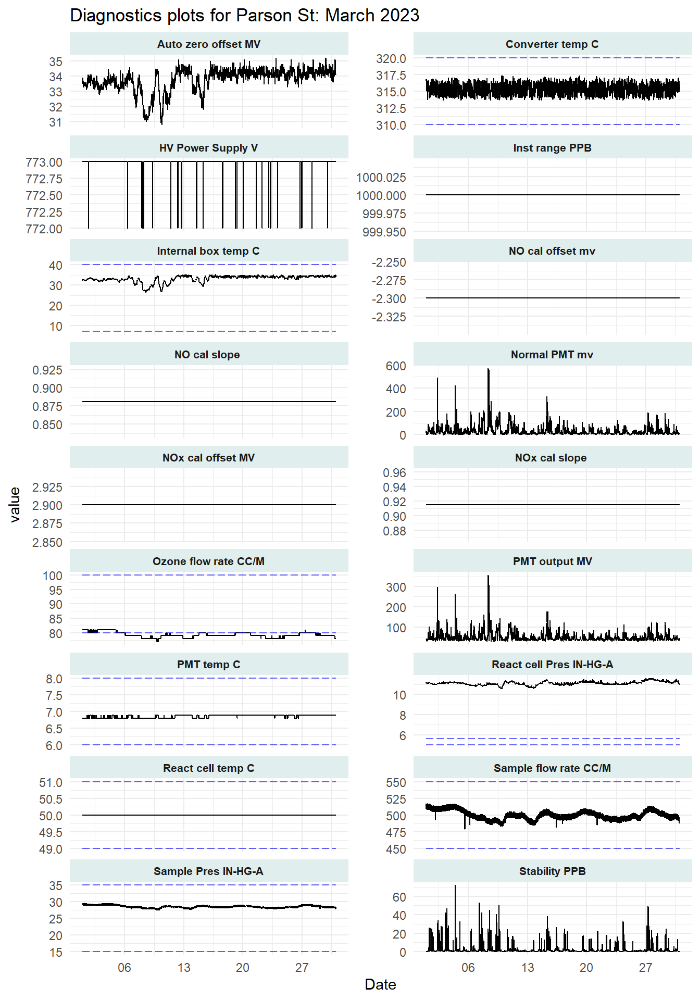
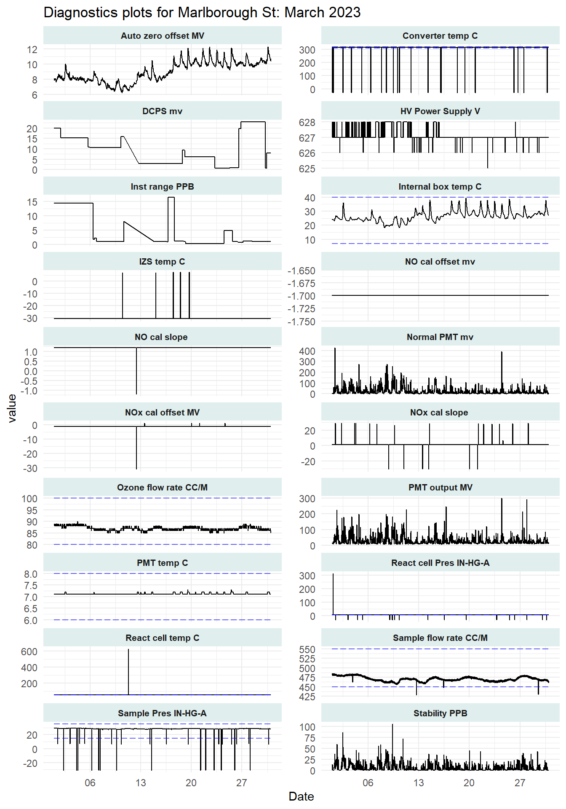

| Site | Pollutant | Number missing | Percent missing |
|---|---|---|---|
| Brislington | NO2 | 24 | 3% |
| Wells Road | NO2 | 3 | 0% |
| Marlborough St | NO2 | 3 | 0% |
| Parson St | NO2 | 1 | 0% |
| Fishponds | NO2 | 1 | 0% |
| Colston Ave | NO2 | 1 | 0% |
| Parson St | PM2.5 | 1 | 0% |
| Parson St | RH | 1 | 0% |
Air Quality Data: QA Report
Report for period: December 2022
Missing Data
Period
This section shows the number and percentage of missing hourly data from BCC’s continuous analysers for the period.
Cumulative
The table below indicates the trajectory towards compliance with the >=85% data capture KPI for continuous data. The start date is 1st January for the year of the period selected. Data capture cannot be known with certainty until after the end of the calendar year.
| Site | Pollutant | Number missing | Percent missing | Data Capture |
|---|---|---|---|---|
| Parson St | NO2 | 146 | 2% | 98% |
| Marlborough St | NO2 | 137 | 2% | 98% |
| Wells Road | NO2 | 95 | 1% | 99% |
| Fishponds | NO2 | 66 | 1% | 99% |
| Brislington | NO2 | 50 | 1% | 99% |
| Colston Ave | NO2 | 47 | 0% | 100% |
| Parson St | PM2.5 | 1630 | 19% | 81% |
| Parson St | RH | 758 | 9% | 91% |
| Parson St | TEMP | 4991 | 57% | 43% |
Calibration Factors
Zero calibration factors should be close to zero. When levels approach 2 or greater, this could indicate a leak in the sample line to the bottle or another problem.
Sensitivity calibration factors should be close to 1. Factors greater than 1.5 could indicate contamination of the gas bottle.
| NOx Calibration Factors Summary | |||||
| 2022-12-01 to 2022-12-31 | |||||
| Pollutant | Factor | Value | Target | ||
|---|---|---|---|---|---|
| Brislington | 2022-12-08 | NOx | Zero | 0.30 | |
| 2022-12-08 | NOx | Sensitivity | 1.21 | ||
| 2022-12-08 | NO | Zero | 0.00 | ||
| 2022-12-08 | NO | Sensitivity | 1.38 | ||
| 2022-12-21 | NOx | Zero | 0.00 | ||
| 2022-12-21 | NOx | Sensitivity | 1.23 | ||
| 2022-12-21 | NO | Zero | −0.40 | ||
| 2022-12-21 | NO | Sensitivity | 1.48 | ||
| Wells Road | 2022-12-08 | NOx | Zero | 0.70 | |
| 2022-12-08 | NOx | Sensitivity | 0.98 | ||
| 2022-12-08 | NO | Zero | 0.40 | ||
| 2022-12-08 | NO | Sensitivity | 1.11 | ||
| 2022-12-21 | NOx | Zero | 1.70 | ||
| 2022-12-21 | NOx | Sensitivity | 0.96 | ||
| 2022-12-21 | NO | Zero | 0.10 | ||
| 2022-12-21 | NO | Sensitivity | 1.11 | ||
| Parson Street | 2022-12-08 | NOx | Zero | −0.20 | |
| 2022-12-08 | NOx | Sensitivity | 1.74 | ||
| 2022-12-08 | NO | Zero | 1.30 | ||
| 2022-12-08 | NO | Sensitivity | 2.06 | ||
| 2022-12-21 | NOx | Zero | −0.90 | ||
| 2022-12-21 | NOx | Sensitivity | 2.26 | ||
| 2022-12-21 | NO | Zero | 0.90 | ||
| 2022-12-21 | NO | Sensitivity | 2.05 | ||
| Marlborough Street | 2022-12-08 | NOx | Zero | 1.60 | |
| 2022-12-08 | NOx | Sensitivity | 1.06 | ||
| 2022-12-08 | NO | Zero | 1.10 | ||
| 2022-12-08 | NO | Sensitivity | 1.20 | ||
| 2022-12-21 | NOx | Zero | 1.10 | ||
| 2022-12-21 | NOx | Sensitivity | 1.08 | ||
| 2022-12-21 | NO | Zero | 0.60 | ||
| 2022-12-21 | NO | Sensitivity | 1.30 | ||
| Bristol Airport | 2022-12-09 | NOx | Zero | 1.77 | |
| 2022-12-09 | NOx | Sensitivity | 1.30 | ||
| 2022-12-09 | NO | Zero | 0.87 | ||
| 2022-12-09 | NO | Sensitivity | 1.52 | ||
| 2022-12-22 | NOx | Zero | 1.00 | ||
| 2022-12-22 | NOx | Sensitivity | 1.24 | ||
| 2022-12-22 | NO | Zero | 0.60 | ||
| 2022-12-22 | NO | Sensitivity | 1.53 | ||
| Colston Avenue | 2022-12-12 | NOx | Zero | 6.10 | |
| 2022-12-12 | NOx | Sensitivity | 1.16 | ||
| 2022-12-12 | NO | Zero | 5.20 | ||
| 2022-12-12 | NO | Sensitivity | 1.41 | ||
| 2022-12-21 | NOx | Zero | 5.57 | ||
| 2022-12-21 | NOx | Sensitivity | 1.61 | ||
| 2022-12-21 | NO | Zero | 5.30 | ||
| 2022-12-21 | NO | Sensitivity | 2.00 | ||
| Fishponds | 2022-12-22 | NOx | Zero | −0.20 | |
| 2022-12-22 | NOx | Sensitivity | 0.99 | ||
| 2022-12-22 | NO | Zero | −0.30 | ||
| 2022-12-22 | NO | Sensitivity | 1.24 | ||
Span Divergence
Span readings should be similar for NOx and NO. The stated value for NOx and NO on the trace gas is usually within 1 - 2 ppb of each other. High variance in span calibration readings can indicate a contaminated cylinder.
If no line is plotted it is likely that only one calibration was done in the period selected.

Telemetry: Data Allowance Used
The Teltonika routers use multi - network SIMs that are capped at 3GB per month. Allowances are shared over all SIMs and refresh on the first day of each month. Six sites operated by BCC have EnviDAS data loggers running Windows 10. Windows updates and other downloads related to the loggers consume the majority of the data. Updates are often run at the end of the month so high data use is normal to see here.

Cumulative Data Use

Instrument Diagnostics
The NOx analysers used by BCC log diagnostics data for the internal components of the instruments. These data can be useful to track performance of the devices and identify maintenance needs.




